library(readr)
library(dplyr)
library(tidyr)
library(magrittr)
library(stringr)
library(tximport)
library(stats)
library("RColorBrewer")
library(ggplot2)
library(ggfortify)RNA_seq
Cargando librerias
Cargamos varias librerias del tidyverse para hacernos mas facil la vida con los dataframes
Cargando archivos
Cargar los datos directo del output de kallisto con tximport
En el archivo all_samples.txt esta la informacion de los nombres de cada muestra y a cual grupo experimental pertenecen.
colData <- read_delim("rna-seq/all_samples.txt",
delim = "\t", escape_double = FALSE,
col_names = FALSE, trim_ws = TRUE)
#Nombramos las columnas para que no se llamen X1 y X2
colData <- colData[,1:2]
colnames(colData) <- c("group", "sample")
#El archivo tiene la info completa de dos experimentos distintos
#Aqui solo usaremos los irradiados "ir" y sus controles "dc"
colData %<>% filter(group %in% c("dc", "ir"))
rnames <- colData$sample
colData <- as.data.frame(colData$group, row.names = rnames)
colnames(colData) <- c("group")Usando los nombres contenidos en colData cargamos el archivo abundance.tsv para cada muestra.
Cargamos el archivo geneLengths porque necesitamos la informacion con la correspondencia gen-transcrito. Este archivo lo procesamos para que tx2gene tenga esta info
files <- file.path("rna-seq", rownames(colData), "abundance.tsv")
names(files) <- rownames(colData)
geneLengths <- read_delim("transcript_lengths.tsv",
delim = "\t", escape_double = FALSE,
trim_ws = TRUE)Rows: 464338 Columns: 3
── Column specification ────────────────────────────────────────────────────────
Delimiter: "\t"
chr (2): transcript_id, trinity_len
dbl (1): sequence_length
ℹ Use `spec()` to retrieve the full column specification for this data.
ℹ Specify the column types or set `show_col_types = FALSE` to quiet this message.tx2gene <- transmute(geneLengths, transcript_id, gene_id = str_remove(transcript_id, "_i[0-9]+"))
counts <- tximport(files, type = "kallisto", tx2gene = tx2gene, ignoreAfterBar = TRUE)Note: importing `abundance.h5` is typically faster than `abundance.tsv`
reading in files with read_tsv
1 2 3 4 5 6 7 8 9 10
summarizing abundance
summarizing counts
summarizing lengthLa counts$counts tiene la matriz con los conteos estimados de kallisto. Asimismo, counts$lengths tiene una estimacion de las longitudes de los transcritos, que nos sirve para normalizar como TPM y RPKM.
Mas sobre tximport
El paquete de analisis de expresion diferencial DESeq2 trabaja mejor con datos a nivel gen, pero los programas como kallisto, salmon y otros cuantifican a nivel transcrito. Por eso, es buena idea importar los datos a traves de tximport En este link hay mas informacion sobre como cargar los datos desde diferentes programas de cuantificacion y como utilizarlos con DESeq2, edgeR o limma-voom
Distintas maneras de normalizar transcritos
Conteos por millon
La forma mas simple de normalizar es dividir los conteos de cada gen por el numero total de conteos. Asi, para cada muestra, la suma de los cpm es 1. Este numero por convencion se multiplica por un millon. Asi, se normalizan los datos corrigiendo diferencias en el taman~o de la libreria o la profundidad de secuenciacion. Otras opciones de normalizacion son dividir no por la suma sino por el valor del cuartil superior o de la media.
\[ cpm = \frac{conteo_{gen^i}}{total}*10^{6} \]
#Counts per million
cpm <- apply(counts$counts, 2, function(x) x/sum(as.numeric(x)) * 10^6)
#La suma de todas las columnas es 1 millon
colSums(cpm)dc_rep1 dc_rep2 dc_rep3 dc_rep4 dc_rep6 ir_rep1 ir_rep4 ir_rep5 ir_rep6 ir_rep7
1e+06 1e+06 1e+06 1e+06 1e+06 1e+06 1e+06 1e+06 1e+06 1e+06 Fragmentos por kilobase de millones de reads (FPKM)
Aqui, el CPM se divide por otro factor, que es la longitud del gen en unidades de kilobases. Esta normalizacion tambien corrige que los genes mas largos daran mas conteos.
\[ FPKM = \frac{\frac{conteo_{gen^i}}{total}*10^{6}}{\frac{largo_{gen^i}}{1000}} \]
Al despejar:
\[ FPKM = \frac{10^9 * conteo_{gen^i}}{total*largo_{gen^i}} \]
#Computar FPKM
#Vector de longitudes
rpkm <- apply(counts$counts, MARGIN = 2, FUN = function(x){
10^9 * x / sum(as.numeric(x)) / counts$length
})
#Las suma de las columnas no son iguales
rpkm %>% colSums() dc_rep1 dc_rep2 dc_rep3 dc_rep4 dc_rep6 ir_rep1 ir_rep4 ir_rep5
9416170 9319382 9338847 11053736 9390908 9451093 10433185 9291354
ir_rep6 ir_rep7
9639737 11566170 Transcritos por millon
Esta normalizacion es la misma idea que FPKM pero la division por la longitud se hace primero y solo posteriormente se hace la normalizacion por el tamano dd la libreria. Asi, el total de los TPM de una libreria vuelve a sumar 1 millon y es mas intuitivo de entender.
\[ TPM = \frac{\frac{conteo_{gen^i}}{\frac{largo_{gen^i}}{1000}}}{total*10^{6}} \]
#TPM
tpm <- counts$counts /counts$length/1000
tpm <- apply(tpm, 2, function(x){x/sum(x) * 10^6})
#La suma si es un millon
tpm %>%colSums()dc_rep1 dc_rep2 dc_rep3 dc_rep4 dc_rep6 ir_rep1 ir_rep4 ir_rep5 ir_rep6 ir_rep7
1e+06 1e+06 1e+06 1e+06 1e+06 1e+06 1e+06 1e+06 1e+06 1e+06 Analisis exploratorio de la tabla de conteos
Ahora tenemos una matriz de TPM en donde las columnas corresponden a las diferentes muestras y las filas a diferentes genes. Al calcular la varianza de cada fila, estamos calculando cuanto varia la expresion de cada gen en las distintas muestras. Usaremos los 100 genes con mayor varianza para visualizar nuestros datos en una matriz o mapa de calor.
library(pheatmap)
#calcular la varianza
V <- tpm %>% apply(1, var)
#Los nombres de los 100 genes con la mayor varianza
selectedGenes <- names(V[order(V, decreasing = T)][1:100])
colData_df <- mutate(colData, sample = rownames(colData))
#Usar estos genes para explorar los datos
tpm[selectedGenes,] %>% pheatmap(scale = "row", show_rownames = F,
annotation_col = colData,
cutree_cols = 2)
En este analisis preeliminar de los datos, es obvio que cuatro controles se agrupan, asi como cuatro muestras experimentales. Sin embargo, dc_rep4 e ir_rep7 se apartan de las demas. Esto puede deberse a variabilidad inherente a cada muestra durante el proceso experimental, la secuenciacion u otros factores. Aunque hay maneras de corregir esta varianza inesperada, para este ejercicio, simplemente eliminaremos estas dos muestras.
Analisis de componentes principales
Las siguiente graficas de componentes principales nos confirma que ambas muestras son outliers sobre el componente principal 1, que explica el 60% de la varianza. Este es un buen argumento para excluirlas de los siguientes analisis.
M <- t(tpm)
#Por que se usa el +1?
M <- log2(M + 1)
pcaResults <- prcomp(M)
autoplot(pcaResults, data = colData, colour = 'group')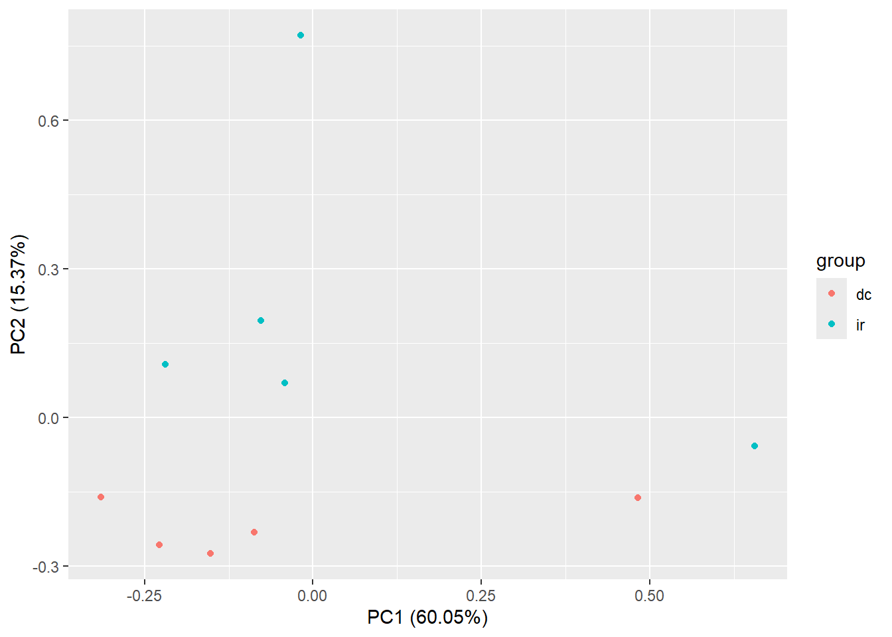
#Con ggplot
pcaResults$x %>% as_tibble() %>%
mutate(samples = rownames(pcaResults$x),
group = if_else(str_detect(samples,"dc"), "Control", "Irradiated")) %>%
ggplot(aes(PC1,PC2)) + geom_text(aes(label=samples, col = group))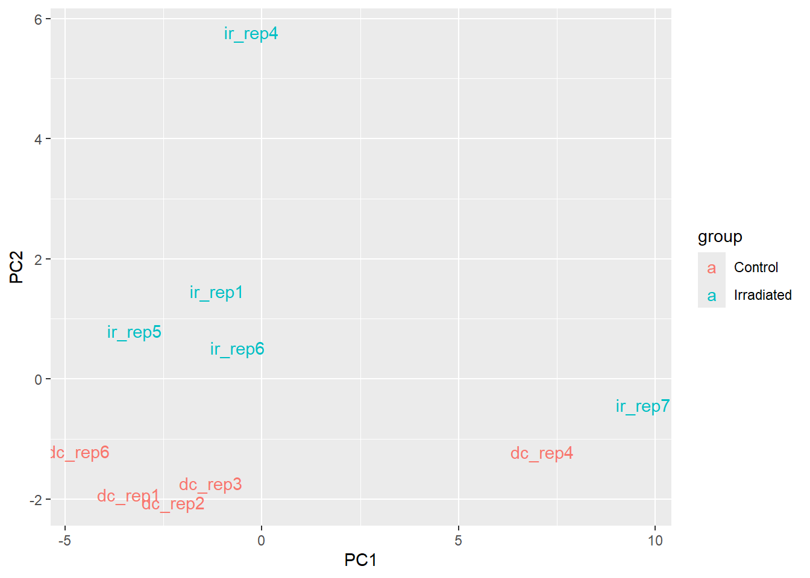
Filtrar los datos raros
Vamos a quitar las dos muestras tanto de la tabla de agrupacion experimental colData como de cada matriz del objeto txi counts.
#Algo raro con las muestras?
colData <- colData %>% mutate(sample = rownames(colData)) %>%
filter(!(sample %in% c("dc_rep4", "ir_rep7")))
#Remove samples
counts$abundance <- counts$abundance[,-c(4,10)]
counts$counts <- counts$counts[,-c(4,10)]
counts$length <- counts$length[,-c(4,10)]
tpm <- tpm[,-c(4,10)]Inmediatamente podemos ver una mejora en el clustering de los datos
M <- t(tpm)
#Por que se usa el +1?
M <- log2(M + 1)
pcaResults <- prcomp(M)
#Con ggplot
pcaResults$x %>% as_tibble() %>%
mutate(samples = rownames(pcaResults$x),
group = if_else(str_detect(samples,"dc"), "Control", "Irradiated")) %>%
ggplot(aes(PC1,PC2)) + geom_text(aes(label=samples, col = group))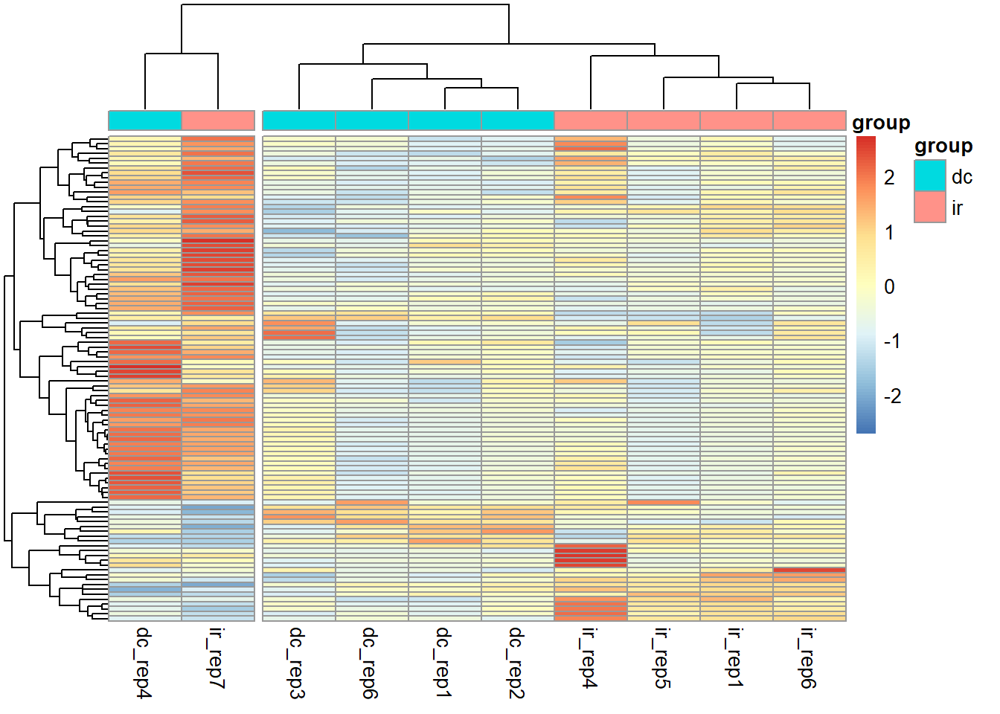
DESeq2 para analisis diferencial
Importar los datos a DESeq2
Para importar nuestros datos a un objeto de la libreria DESeq2, es practico hacerlo a partir del objeto tximport que creamos al principio de la practica. La funcion DESeqDataSetFromTximport toma un objeto txi, la informacion experimento/muestra contenida en colData y una formula de R que nos diga de que variables pensamos que depende la variacion, en este caso, el grupo.
library(DESeq2)Lade nötiges Paket: S4VectorsLade nötiges Paket: stats4Lade nötiges Paket: BiocGenerics
Attache Paket: 'BiocGenerics'Die folgenden Objekte sind maskiert von 'package:dplyr':
combine, intersect, setdiff, unionDie folgenden Objekte sind maskiert von 'package:stats':
IQR, mad, sd, var, xtabsDie folgenden Objekte sind maskiert von 'package:base':
anyDuplicated, aperm, append, as.data.frame, basename, cbind,
colnames, dirname, do.call, duplicated, eval, evalq, Filter, Find,
get, grep, grepl, intersect, is.unsorted, lapply, Map, mapply,
match, mget, order, paste, pmax, pmax.int, pmin, pmin.int,
Position, rank, rbind, Reduce, rownames, sapply, setdiff, table,
tapply, union, unique, unsplit, which.max, which.min
Attache Paket: 'S4Vectors'Das folgende Objekt ist maskiert 'package:tidyr':
expandDie folgenden Objekte sind maskiert von 'package:dplyr':
first, renameDas folgende Objekt ist maskiert 'package:utils':
findMatchesDie folgenden Objekte sind maskiert von 'package:base':
expand.grid, I, unnameLade nötiges Paket: IRanges
Attache Paket: 'IRanges'Die folgenden Objekte sind maskiert von 'package:dplyr':
collapse, desc, sliceDas folgende Objekt ist maskiert 'package:grDevices':
windowsLade nötiges Paket: GenomicRangesLade nötiges Paket: GenomeInfoDb
Attache Paket: 'GenomicRanges'Das folgende Objekt ist maskiert 'package:magrittr':
subtractLade nötiges Paket: SummarizedExperimentLade nötiges Paket: MatrixGenericsLade nötiges Paket: matrixStats
Attache Paket: 'matrixStats'Das folgende Objekt ist maskiert 'package:dplyr':
count
Attache Paket: 'MatrixGenerics'Die folgenden Objekte sind maskiert von 'package:matrixStats':
colAlls, colAnyNAs, colAnys, colAvgsPerRowSet, colCollapse,
colCounts, colCummaxs, colCummins, colCumprods, colCumsums,
colDiffs, colIQRDiffs, colIQRs, colLogSumExps, colMadDiffs,
colMads, colMaxs, colMeans2, colMedians, colMins, colOrderStats,
colProds, colQuantiles, colRanges, colRanks, colSdDiffs, colSds,
colSums2, colTabulates, colVarDiffs, colVars, colWeightedMads,
colWeightedMeans, colWeightedMedians, colWeightedSds,
colWeightedVars, rowAlls, rowAnyNAs, rowAnys, rowAvgsPerColSet,
rowCollapse, rowCounts, rowCummaxs, rowCummins, rowCumprods,
rowCumsums, rowDiffs, rowIQRDiffs, rowIQRs, rowLogSumExps,
rowMadDiffs, rowMads, rowMaxs, rowMeans2, rowMedians, rowMins,
rowOrderStats, rowProds, rowQuantiles, rowRanges, rowRanks,
rowSdDiffs, rowSds, rowSums2, rowTabulates, rowVarDiffs, rowVars,
rowWeightedMads, rowWeightedMeans, rowWeightedMedians,
rowWeightedSds, rowWeightedVarsLade nötiges Paket: BiobaseWelcome to Bioconductor
Vignettes contain introductory material; view with
'browseVignettes()'. To cite Bioconductor, see
'citation("Biobase")', and for packages 'citation("pkgname")'.
Attache Paket: 'Biobase'Das folgende Objekt ist maskiert 'package:MatrixGenerics':
rowMediansDie folgenden Objekte sind maskiert von 'package:matrixStats':
anyMissing, rowMedians#Formula
designFormula <- "~group"
#Convertirmatriz a un objeto DESeq
dds <- DESeqDataSetFromTximport(txi = counts,
colData = colData,
design = as.formula(designFormula))using counts and average transcript lengths from tximportAunque tambien podemos obtener un objeto a partir de una matriz o un objeto SummarizedExperiment, al importar con tximport, DESeq2 automaticamente tomara en cuenta la informacion del largo de los transcritos.
Filtrado preeliminar
Es practica comun eliminar los genes con pocos conteos, o que tengan un conteo de 0 en una proporcion importante de las muestras. La razon es que estos genes tienen poca informacion estadistica y quitarlos acelera los computos subsecuentes.
En este codigo estamos filtrando los genes que no tengan mas de 10 cuentas entre todas las muestras. La segunda linea deja solo los genes que tengan al menos 1 conteo en al menos 5 muestras.
message("Antes del filtrado: "); nrow(dds)Antes del filtrado: [1] 357706#Cuales tienen al menos un conteo 10 conteos
dds <- dds[rowSums(DESeq2::counts(dds)) > 10,]
#Genes con al menos un conteo en al menos 4 muestras
dds <- dds[rowSums(DESeq2::counts(dds) != 0) >4,]
message("Despues del filtrado: "); nrow(dds)Despues del filtrado: [1] 178513Workflow estandar de DESeq2
DESeq es la funcion magica del paquete que lleva a cabo la transformacion de los conteos y su modelado.
#Aplicar el workflow deseq
dds <- DESeq(dds)estimating size factorsusing 'avgTxLength' from assays(dds), correcting for library sizeestimating dispersionsgene-wise dispersion estimatesmean-dispersion relationshipfinal dispersion estimatesfitting model and testingComo puedes ver, la funcion DESeq lleva a cabo al menos 3 pasos:
Estimar factores de tamano. 1
Estimar dispersiones. 2
Hacer un ajuste de los conteos con un modelo de distribucion discreta 3
Podemos obtener la informacion de estos tests estadisticos con la funcion results aplicada al objetdo dds . Contrast es un vector en el que viene “group”, el nombre de la columna donde se especifica el tratamiento, “ir” el tratamiento experimental, “dc” el control.
DEresults = results(dds, contrast = c("group", "ir", "dc"))
DEresults <- DEresults[order(DEresults$pvalue),]
head(DEresults)log2 fold change (MLE): group ir vs dc
Wald test p-value: group ir vs dc
DataFrame with 6 rows and 6 columns
baseMean log2FoldChange lfcSE stat pvalue
<numeric> <numeric> <numeric> <numeric> <numeric>
TRINITY_DN122923_c0_g1 489.656 -4.63528 0.280337 -16.53470 2.06408e-61
TRINITY_DN179_c4_g3 334.256 3.04068 0.275236 11.04754 2.25301e-28
TRINITY_DN6007_c0_g1 545.587 -2.09214 0.200094 -10.45578 1.37855e-25
TRINITY_DN378_c10_g1 421.232 -2.02683 0.203418 -9.96390 2.19296e-23
TRINITY_DN15858_c0_g1 1672.915 -1.64663 0.165349 -9.95847 2.31604e-23
TRINITY_DN11600_c0_g1 163.793 -3.19541 0.333482 -9.58196 9.52172e-22
padj
<numeric>
TRINITY_DN122923_c0_g1 1.68295e-56
TRINITY_DN179_c4_g3 9.18494e-24
TRINITY_DN6007_c0_g1 3.74666e-21
TRINITY_DN378_c10_g1 3.77676e-19
TRINITY_DN15858_c0_g1 3.77676e-19
TRINITY_DN11600_c0_g1 1.29392e-17Esta grafica nos ayuda a explorar la distribucion de los datos. Vemos que la mayoria de los genes estan cerca de 0, es decir, la mayoria de los genes permanece sin cambio. Los puntos azules son los genes significativamente desregulados al alza o a la baja.
DESeq2::plotMA(dds, ylim = c(-2,2))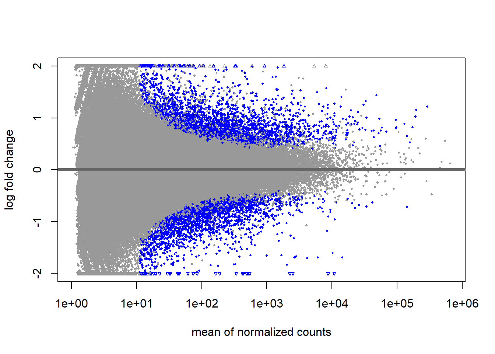
Aun asi, se nota que los genes con baja expresion tienen mayor valor absoluto de log fold change. Esto no es ideal para visualizar o para seleccionar genes, pues al ordenarlos de acuerdo al tamano del efecto, tendremos un sesgo hacia genes con mas baja expresion. En consecuencia, es util “encoger” el log fold change para efectos de visualizacion y seleccion.
resultsNames(dds)[1] "Intercept" "group_ir_vs_dc"resLFC <- lfcShrink(dds, coef = "group_ir_vs_dc", type = "apeglm")using 'apeglm' for LFC shrinkage. If used in published research, please cite:
Zhu, A., Ibrahim, J.G., Love, M.I. (2018) Heavy-tailed prior distributions for
sequence count data: removing the noise and preserving large differences.
Bioinformatics. https://doi.org/10.1093/bioinformatics/bty895Warning in nbinomGLM(x = x, Y = YNZ, size = size, weights = weightsNZ, offset =
offsetNZ, : the line search routine failed, unable to sufficiently decrease the
function valueDESeq2::plotMA(resLFC, ylim = c(-2,2))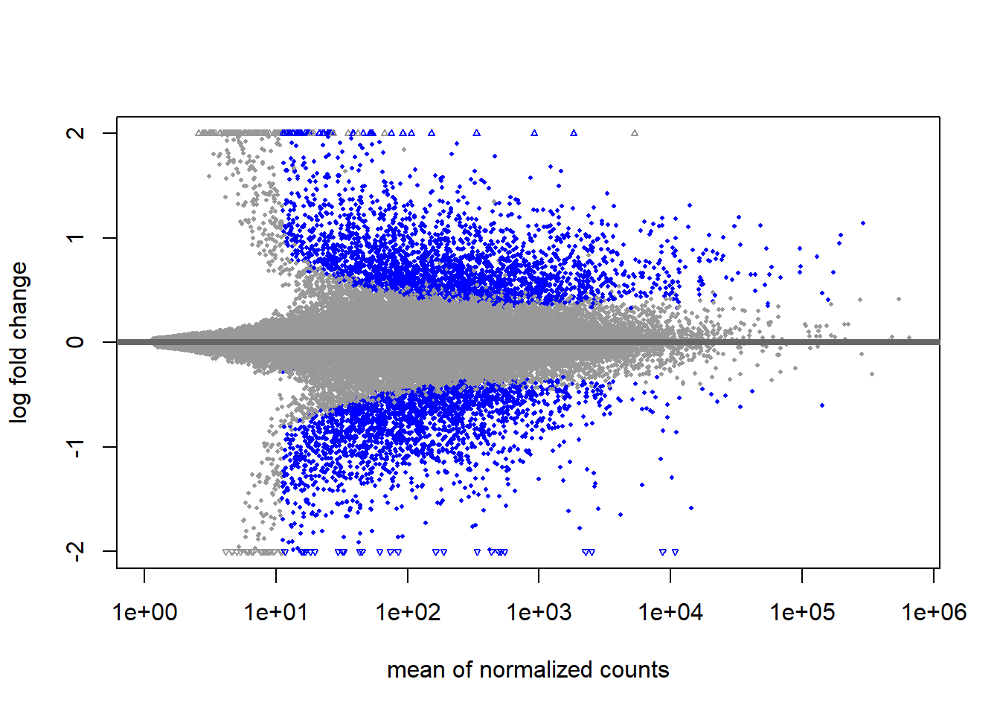
Asi, vemos un poco atemperada la magnitud de logfold change asociado a los conteos bajos.
Otra prueba diagnostica es mirar la distribucion de los p-valores antes del ajuste. Vemos un enriquecimiento hace p-valores bajos y una distribucion uniforme
ggplot(as.data.frame(DEresults), aes(x=pvalue)) + geom_histogram(bins = 100)Warning: Removed 76 rows containing non-finite outside the scale range
(`stat_bin()`).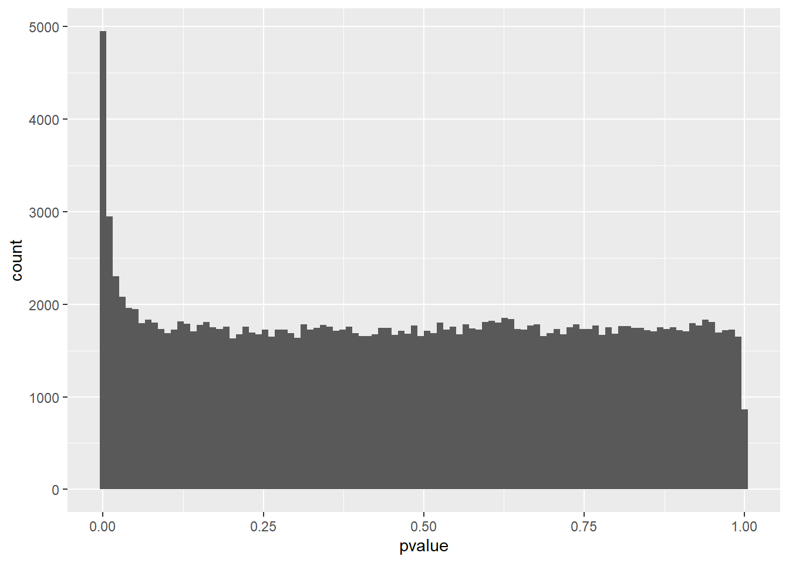
#Convertimos a dataframe y quitamos los genes que tienen na en padjusted
volcano_df <- as.data.frame(resLFC) %>% filter(!is.na(padj)) %>%
#Hacemos una variable y por simplicidad y una variable que agrupe significancia estadistica
mutate(y = -log10(padj), significance = ifelse(padj < 0.1, "Significant", "Non-Significant"))
#un dataframe creado para poner etiquetas a genes seleccionados
highlighted_genes <- volcano_df %>% arrange(padj) %>% mutate(gene_id = rownames(.)) %>% group_by(upordown = sign(log2FoldChange)) %>% slice_head(n = 5)
p <- ggplot(volcano_df, aes(log2FoldChange, y)) + geom_point(aes(color = significance)) + geom_hline(yintercept = -log10(0.1), linetype = "dashed") + theme_classic() + xlab("Log2 Fold Change") + ylab("-Log10 Adjusted P-value") + ggtitle("Volcano Plot") + labs(color = NULL)
p + annotate("text", x = highlighted_genes$log2FoldChange, y = highlighted_genes$y, label = highlighted_genes$gene_id)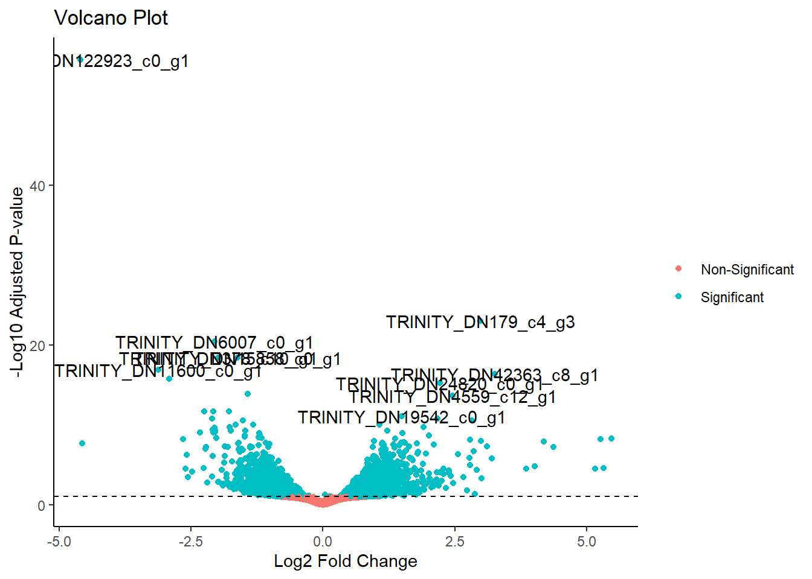
Normalizaciones de los conteos
Aunque DESeq2 trabaja con los conteos crudos y usa su propia normalizacion interna, esto no es lo optimo para visualizacion o pca. Para graficas o procedimientos que requieren datos normalizados, se ofrecen dos algoritmos de normalizacion alternativos al mas frecuentemente usado que es el log2
vsd <- varianceStabilizingTransformation(dds, blind = FALSE)
rld <- rlog(dds, blind = FALSE)
df <- bind_rows(
as_tibble(log2(counts(dds, normalized=TRUE)[, 1:2]+1)) %>%
mutate(transformation = "log2(x + 1)"),
as_tibble(assay(vsd)[, 1:2]) %>% mutate(transformation = "vst"),
as_tibble(assay(rld)[, 1:2]) %>% mutate(transformation = "rlog"))
colnames(df)[1:2] <- c("x", "y")
lvls <- c("log2(x + 1)", "vst", "rlog")
df$transformation <- factor(df$transformation, levels=lvls)
ggplot(df, aes(x = x, y = y)) + geom_hex(bins = 80) +
coord_fixed() + facet_grid( . ~ transformation)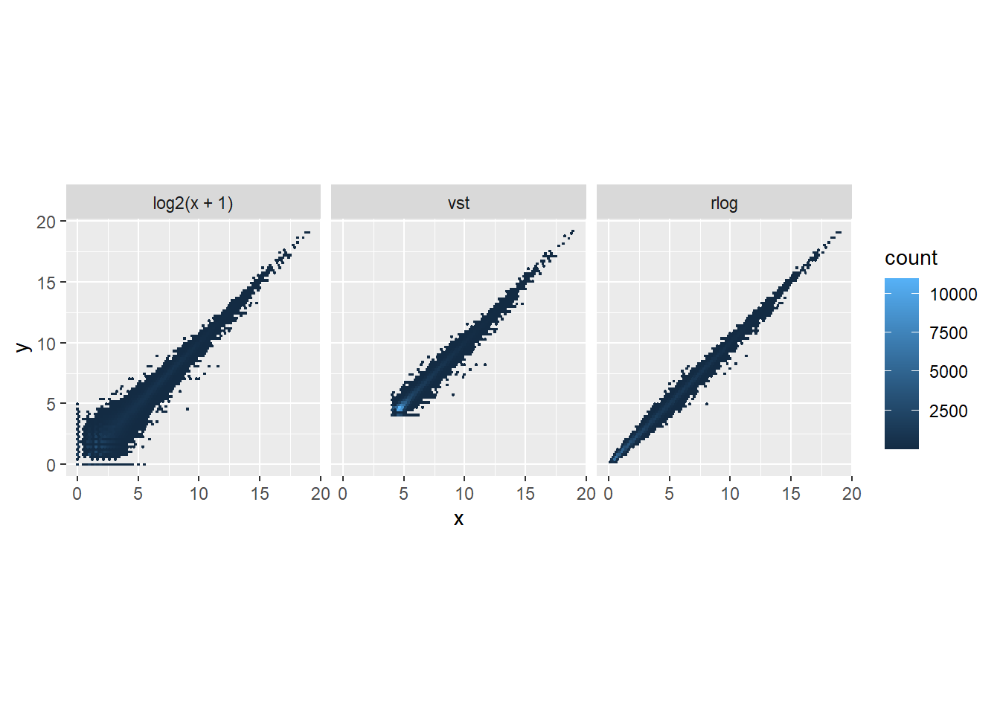
Aqui estamos comparando los conteos de genes entre la muestra 1 y la 2. Las desviaciones de la diagonal son las diferencias entre las muestras. Notan algun patron?
Tambien podemos comparar como como impactan al PCA las diferentes transformaciones
DESeq2::plotPCA(normTransform(dds), intgroup = "group") + ggtitle("Normalizaacion log2 +1")using ntop=500 top features by variance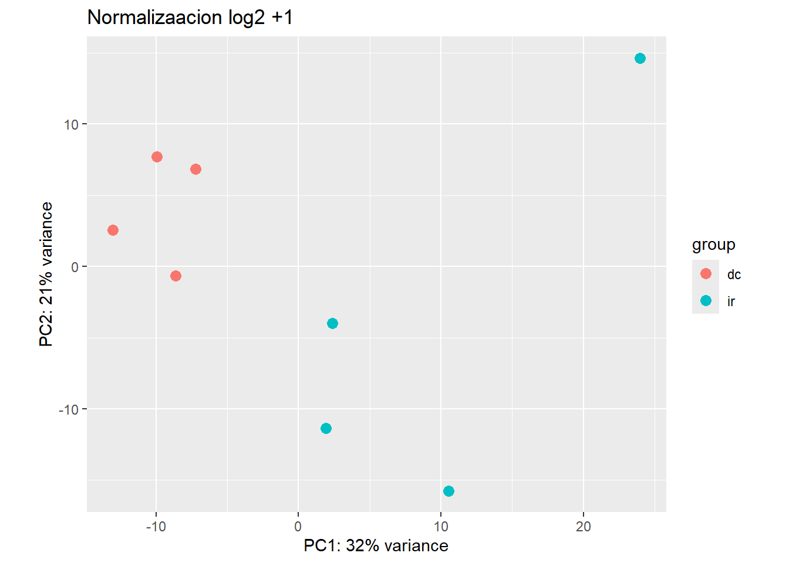
DESeq2::plotPCA(vsd, intgroup = "group") + ggtitle("Variance stabilizing transformation")using ntop=500 top features by variance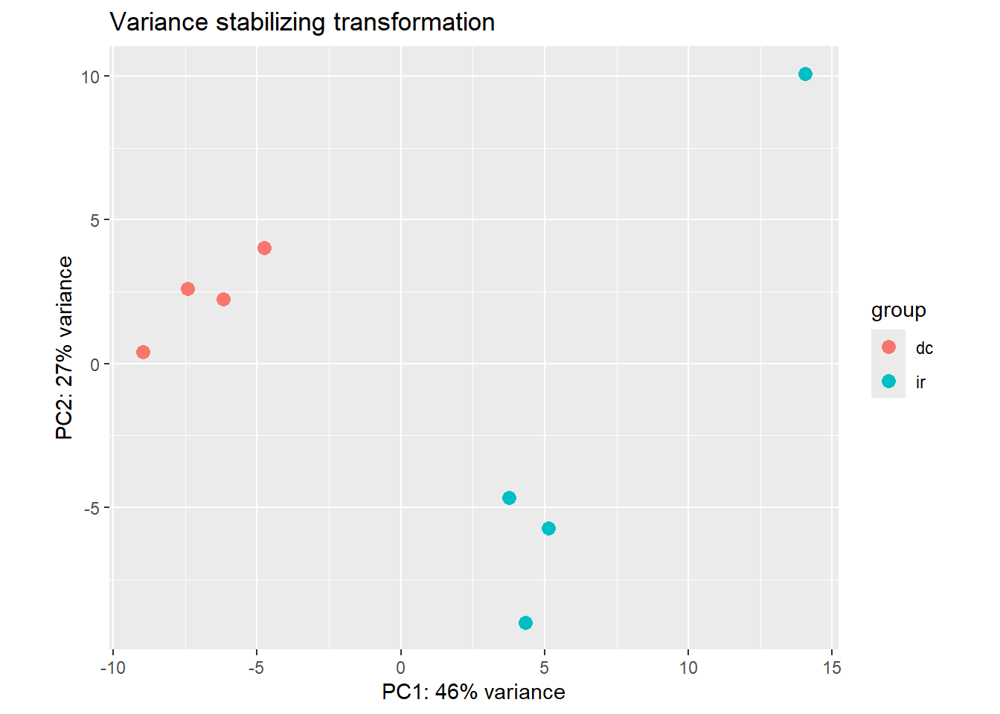
DESeq2::plotPCA(rld, intgroup = "group") + ggtitle("Regularized logarithm")using ntop=500 top features by variance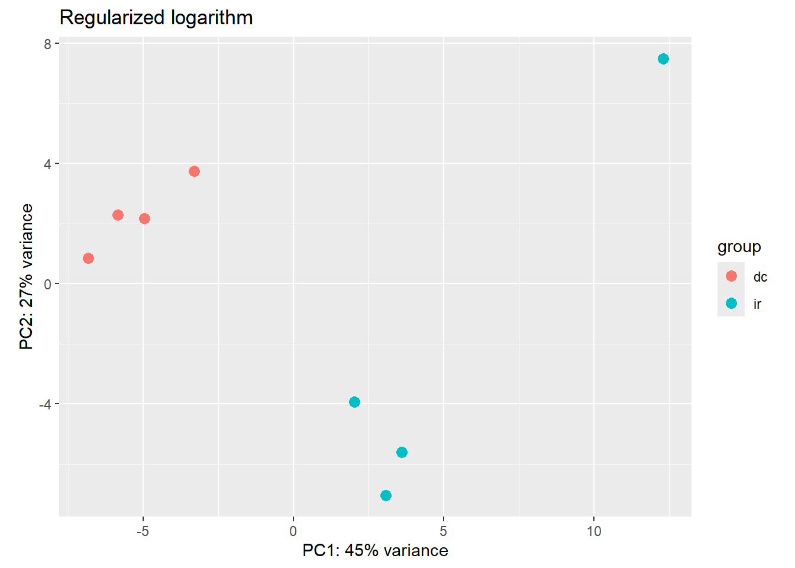
En este caso no parece cambiar mucho, pero el primer componente principal de las dos normalizaciones alternativas explica mas de la varianza. En cualquier caso, los datos se clusterizan mejor que en nuestro primer intento con TPMs artesanales mas arriba.
Heatmap
Volvemos a la grafica de heatmap para visualizacion y clustering pero ahora seleccionando a los genes differencialmente expresados. Primero, tomamos todos los genes diferencialmente expresados sin importar si son al alza o a la baja, con un umbral de significancia de 0,05.
#Genes diferencialmente regulados
DE <- resLFC[!is.na(resLFC$padj),]
DE <- DE[DE$padj < 0.05,]
DE <- DE[abs(DE$log2FoldChange) > 1,]
diff_exp <- as.data.frame(DE, optional = T) %>% mutate(gene_id = row.names(.))Utilizamos la normalizacion por logaritmo regularizado. Con la funcion assay obtenemos la matriz de conteos normalizados para el objeto en cuestion.
assay(rld)[diff_exp$gene_id,] %>% pheatmap(scale = "row", show_rownames = F,
annotation_col = colData,
cutree_cols = 2)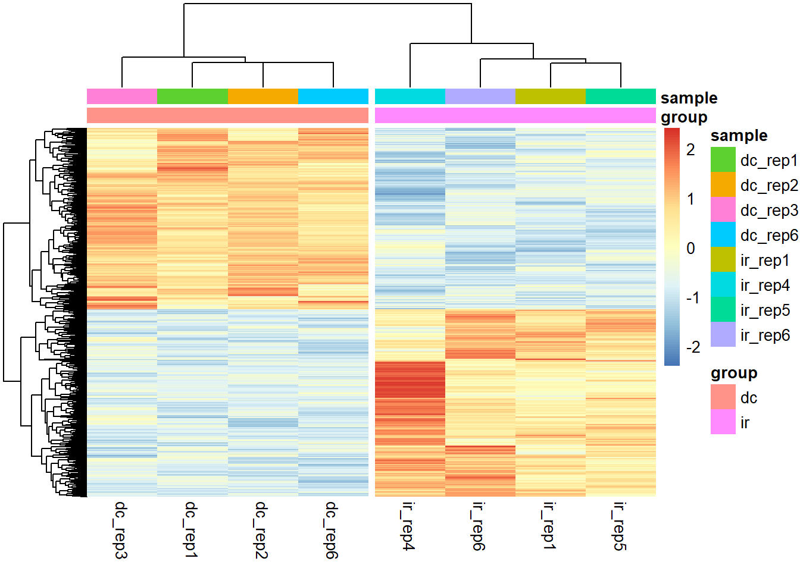
Queda como ejercicio recrear esta grafica con las diferentes transformaciones assay(rld)[diff_exp$gene_id,] , assay(rld)[diff_exp$gene_id,] , assay(normTransform(dds)[diff_exp$gene_id,] , y tpm[diff_exp$gene_id,] . Se nota alguna diferencia?
Enriquecimiento de terminos GO
No solo podemos ver los cambios en genes, sino tambien en grupos de genes agrupados por ontologias, es decir, funciones moleculares y vias metabolicas. La libreria gprofiler2 facilita esto al conectarse con las bases de datos necesarias para muchos organismos modelo. En nuestro caso, por trabajar con un organismo modelo, requerimos un poco de procesamiento de datos para obtener los terminos GO. Iremos paso por paso:
Para este ejercicio, cargaremos el archivo de trinotate, que utiliza varios programas para recabar evidencia sobre la funcion de los genes. En este caso nos interesan principalmente los genes que tienen homologia con alguna proteina de Swissprot.
#Cargar el archivo de anotacion
swissprot_trinotate <- read_delim("onlySwissProt_trinotate_annotation_str_withGeneNames.csv",
delim = "\t", escape_double = FALSE, col_names = FALSE,
na = ".", trim_ws = TRUE)Rows: 41900 Columns: 18
── Column specification ────────────────────────────────────────────────────────
Delimiter: "\t"
chr (10): X1, X2, X3, X4, X6, X7, X8, X9, X10, X16
lgl (8): X5, X11, X12, X13, X14, X15, X17, X18
ℹ Use `spec()` to retrieve the full column specification for this data.
ℹ Specify the column types or set `show_col_types = FALSE` to quiet this message.#Esto es solo para quitar automaticamente las columnas vacias
swissprot_trinotate %<>% select(-where(is.logical))
#Le damos los nombres de las columnas
colnames(swissprot_trinotate) <- c("swiss_prot_name", "gene_id", "transcript_id", "sprot_top_blastx_hit", "peptide_id", "proot_coords", "sprot_top_blastp_hit", "pfam", "signalp", "gene_ontology_pfam")Las operaciones del tidyverse son muy convenientes cuando queremos juntar la informacion de distintas tablas. En este caso, juntamos la informacion de anotacion en swissprot_trinotate que tiene el ID de swissprot con nuestros genes diferencialmente expresados
swissprot_trinotate %<>% mutate(swissprot_id =
str_extract(sprot_top_blastp_hit,"sp\\|(\\w{6})\\|", group = 1))
#Join with a dataframe of the differentially expressed genes
diff_exp %<>% tibble %>% inner_join(swissprot_trinotate)Joining with `by = join_by(gene_id)`Ahora, cargamos la tabla de anotacion de la base de datos UNIPROT, esta se puede descargar de aqui. La libreria janitor es para homogeneizar rapida y facilmente los nombres de las columnas.
library(janitor)
Attache Paket: 'janitor'Die folgenden Objekte sind maskiert von 'package:stats':
chisq.test, fisher.testuniprotkb <- read_delim("uniprotkb_reviewed_true_2023_07_11.tsv",
delim = "\t", escape_double = FALSE,
trim_ws = TRUE)Rows: 569793 Columns: 13── Column specification ────────────────────────────────────────────────────────
Delimiter: "\t"
chr (12): Entry, Reviewed, Entry Name, Protein names, Gene Names, Organism, ...
dbl (1): Length
ℹ Use `spec()` to retrieve the full column specification for this data.
ℹ Specify the column types or set `show_col_types = FALSE` to quiet this message.uniprotkb <- clean_names(uniprotkb)
diff_exp %<>% inner_join(uniprotkb, by = join_by(swissprot_id == entry))
#Esto es solo para quedarnos con el primer match a uniprot
diff_exp %<>% group_by(gene_id) %>% slice_head(n=1)Ahora que juntamos nuestra lista con Uniprot, podemos sacar de aqui el termino GO asociado con cada gene diferencialmente expresado
#Lista de genes sobreregulados
genes_interes <- diff_exp %>% filter(!is.na(gene_ontology_go)) %>%
#extraemos la lista de GO terms con el primer GO predicho para cada gene
pull(gene_ontology_go) %>% str_extract("GO:\\d+") %>% unlistAhora extraemos los terminos GO para el genoma completo, como una especie de “background” para comparar los genes desregulados.
bg_go <- swissprot_trinotate %>%
inner_join(uniprotkb, by = join_by(swissprot_id == entry)) %>%
pull(gene_ontology_go) %>% str_extract("GO:\\d+") %>% unlistGprofiler requiere un organismo, utilizamos a Biomphalaria glabrata pues tambien es un gasteropodo y si se encuentra en su base de datos. Luego, filtramos con un un intersection size relativamente pequeno para quedarnos con los GO mas especificos y no con los generales como “Citoplasma” o “membrana plasmatica”.
library(gprofiler2)
goResults <- gost(query = genes_interes, organism = "bglabrata", custom_bg = bg_go)Detected custom background input, domain scope is set to 'custom'.go <- goResults$result %>% arrange(p_value) %>% filter(intersection_size < 100)Aca se muestran nuestros cinco GO mas enriquecidos en un formato tabla listo para publicacion.
publish_gosttable(goResults, highlight_terms = go[1:5,],
use_colors = TRUE,
show_columns = c("source", "term_name", "term_size", "intersection_size"),
filename = NULL)The input 'highlight_terms' is a data.frame. The column 'term_id' will be used.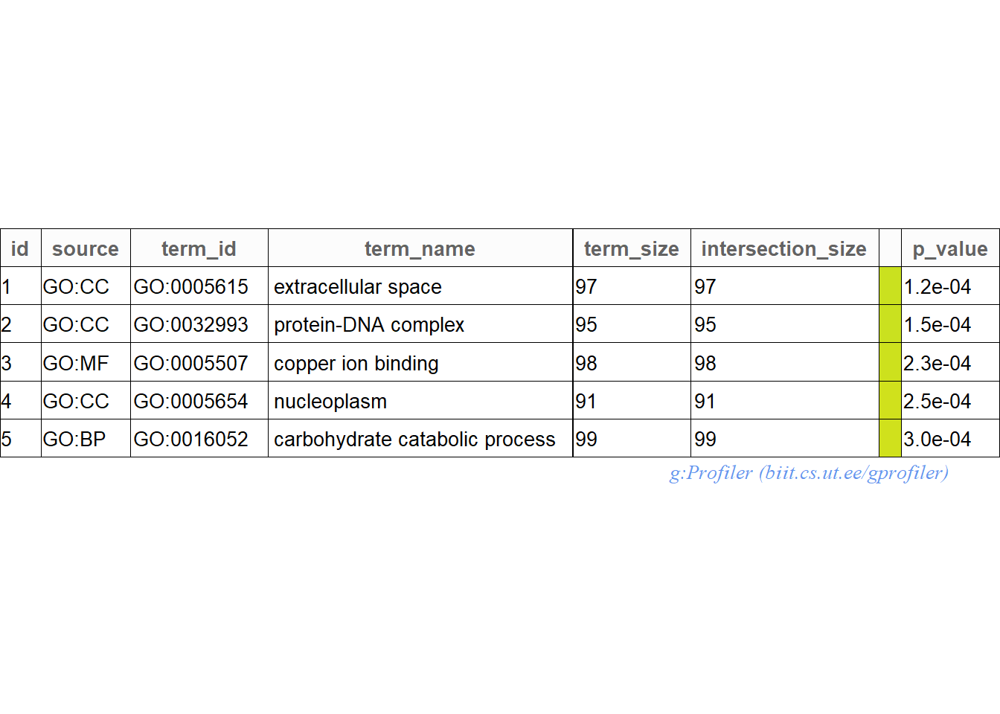
Este procedimiento es mucho mas sencillo para organismos mas establecidos, solo requiere la lista de genes. Asimismo, alternativas en linea para este analisis son Ghostkoala y KAAS en los que se puede subir la secuencia para hacer la anotacion y asociacion con GO y KEGG.
GSEA gene set enrichment analysis
Con la libreria gage, podemos tomar un conjunto de genes y comparar su cambio en expresion en lugar de hacerlo solo con genes aislados. Aqui, tomamos el ultimo de los GO terms seleccionados como enriquecidos. Como comparacion, tomamos un set al azar del mismo tamano. Este codigo esta metido en un loop, por lo que si quieres comparar todos los GO sets enriquecidos automaticamente, solo tienes que cambiar for(i in nrow(go):nrow(go)-1) por for(i in nrow(go):1)
library(gage)for(i in nrow(go):nrow(go)-1){
go_term <- uniprotkb %>% filter(if_any(starts_with("gene_ontology_"), ~ str_detect(.x, go[i,]$term_id)))
go_term %<>% inner_join(swissprot_trinotate, by = join_by(entry == swissprot_id))
geneSet1 <- DEresults %>% as.data.frame %>%
mutate(gene_id = row.names(.)) %>%
filter(gene_id %in% go_term$gene_id) %>% pull(gene_id) %>% unique
normalizedCounts <- assay(vsd)
geneSet2 <- sample(rownames(normalizedCounts), length(geneSet1))
geneSets <- list('top_GO_term' = geneSet1,
'random_set' = geneSet2)
message("comparing vs random sample")
print(go[i,]$term_name)
gseaResults <- gage(exprs = log2(normalizedCounts+1),
ref = match(rownames(colData[colData$group == "dc",]),
colnames(normalizedCounts)),
sampe = match(rownames(colData[colData$group== "ir",]),
colnames(normalizedCounts)),
gsets = geneSets, compare = 'as.group')
print(i)
print(gseaResults)
}comparing vs random sample[1] "calcium ion transport"
[1] 83
$greater
p.geomean stat.mean p.val q.val set.size exp1
top_GO_term 0.2307048 0.7387467 0.2307048 0.4614096 66 0.2307048
random_set 0.7282403 -0.6091278 0.7282403 0.7282403 66 0.7282403
$less
p.geomean stat.mean p.val q.val set.size exp1
random_set 0.2717597 -0.6091278 0.2717597 0.5435195 66 0.2717597
top_GO_term 0.7692952 0.7387467 0.7692952 0.7692952 66 0.7692952
$stats
stat.mean exp1
top_GO_term 0.7387467 0.7387467
random_set -0.6091278 -0.6091278Diferentes normalizaciones
Uno de los problemas que intenta resolver la libreria DESeq2 es el problema de la heterocedasticidad: una manera fancy de decir que las observaciones no tienen una varianza constante. Los conteos de los genes mas expresados tienen una mayor varianza.
library("vsn") #Variance vs mean
meanSdPlot(counts$counts, ranks = F)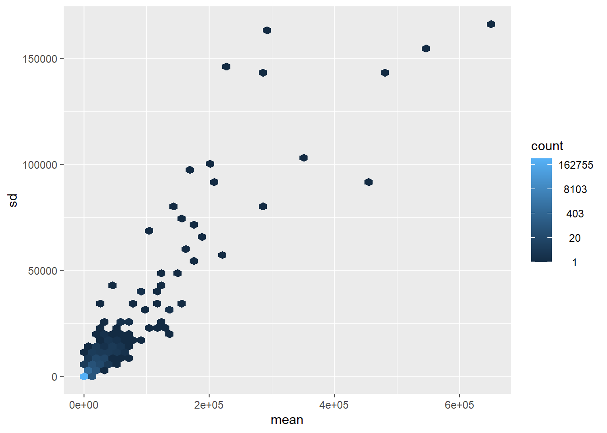
Una de las transformaciones mas comunes es la aplicacion del logaritmo a los datos despues de sumar 1 (Se suma 1 porque los datos pueden ser 0 y su logaritmo no esta definido). Sin embargo, esta transformacion tampoco elimina la heterocedasticidad: ahora son los genes poco expresados los que contribuyen desproporcionadamente a la variacion entre muestras.
log2(counts$counts+1)%>% meanSdPlot(ranks = F)
Diferentes modos de normalizacion
Aunque DESeq2 opera sobre conteos crudos modelados por distribuciones discretas, para visualiciones como PCA, se requieren datos normalizados y con varianzas los mas parecidas posible. Aqui, vemos una grafica RLE de relative log expression. Le expresion de cada gen se divide entre el valor de la mediana de ese gen en todas las muestras y se saca el logaritmo. Idealmente, la normalizacion hace que las cajas se centren en cero y que tengan poca varianza. Se cumple esto con los conteos y conteos normalizados?
library(EDASeq)
par(mfrow = c(1,2))
plotRLE(DESeq2::counts(dds), outline = F, ylim = c(-2,2),
col=as.integer(colData$group),
main = "Raw counts")
plotRLE(DESeq2::counts(dds, normalized = T), outline = F, ylim = c(-2,2),
col=as.numeric(colData$group),
main = "Normalized counts")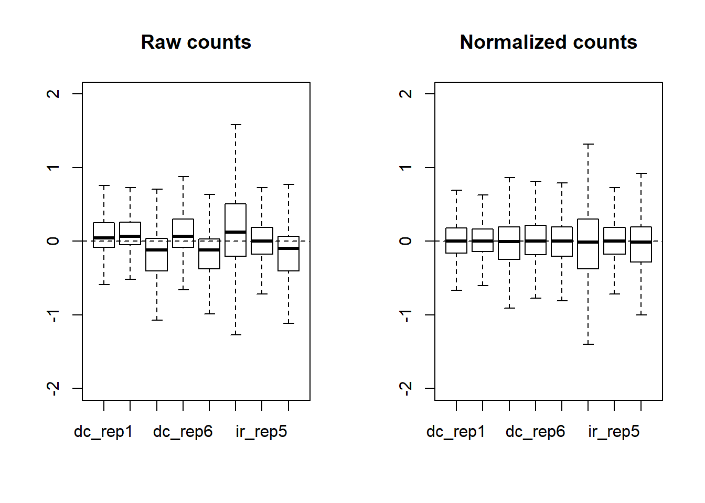
La normalizacion si ayuda a centrar los datos, pero la varianza de cada muestra sigue siendo muy distinta entre muestras. Los siguientes boxplots muestran algo similar a lo que habiamos visto mas arriba, la transformacion estabilizadora de varianza y el logaritmo regularizados son algoritmos de normalizacion mas adecuados para ayudar a comparar y visualizar las diferencias entre librerias.
par(mfrow = c(1,3))
plotRLE(DESeq2::counts(dds, normalized = T), outline = F, ylim = c(-2,2),
col=as.numeric(colData$group),
main = "Normalized counts")
plotRLE(assay(vsd), outline = F, ylim = c(-2,2),
col=as.numeric(colData$group),
main = "Variance stabilizing transformation")
plotRLE(assay(rld), outline = F, ylim = c(-2,2),
col=as.numeric(colData$group),
main = "Regularized log")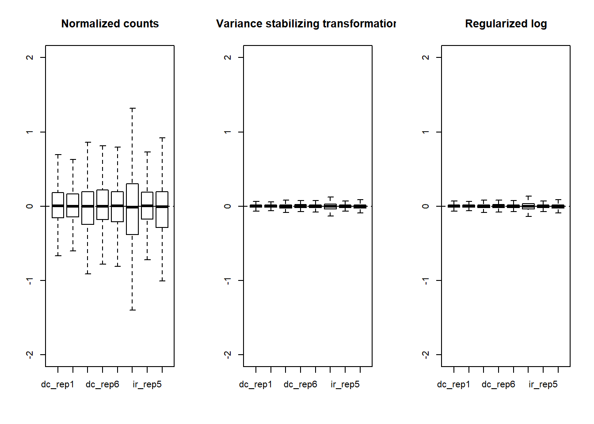
Este tutorial esta basado en el libro Akalin (2020) que esta disponible en Computational Biology with R. Este libro es un muy buen recurso para profundizar en sus conocimientos de R y su uso para la genomica en ambitos que no veremos en el curso.
References
Akalin, A. 2020. Computational Genomics with r. Chapman & Hall/CRC Computational Biology Series. CRC Press. https://books.google.com.mx/books?id=fK0PEAAAQBAJ.
Footnotes
Este es un factor que se estima para cada muestra tal que, si un gen NO cambia su expresion entre una muestra y la otra, la diferencia entre los conteos se puede explicar por los factores de tamano de las dos muestras. Es decir, estos factores corrigen diferentes profundidades de secuenciacion para poder comparar los conteos entre diferentes muestras. Si te interesa saber mas sobre esta funcion, escribe
estimateSizeFactorsForMatrixsin parentesis para ver la implementacion en R o busca el articulo de Anders and Huber (2010).↩︎Este es un parametro que estima la variacion de cada gen para diferentes muestras. Esto despues se utiliza para corregir las dispersiones demasiado grandes usando la informacion de dispersion de otros genes con conteos similares. Asi, se elimina la influencia de los outliers.↩︎
Se hace un ajuste con un modelo lineal generalizado utilizando una distribucion binomial negativa para modelar los conteos. El modelo toma en cuenta el tratamiento y otro tipo de variables (la formula que pasamos como ~group, puede contener otros factores).↩︎